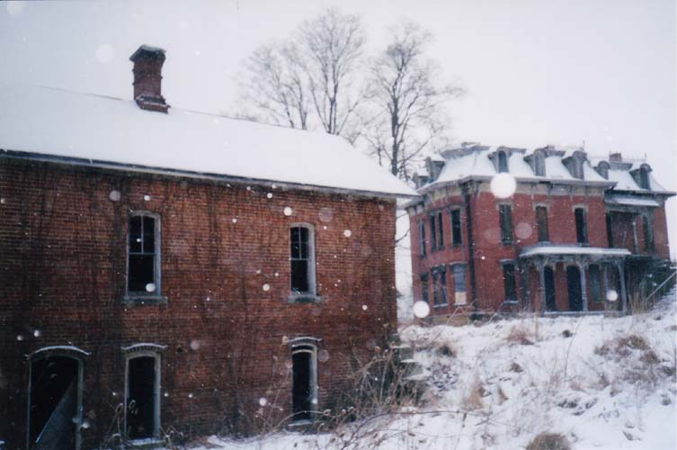

Mudhouse Mansion is an abandoned house located in Fairfield County, just east of Lancaster, at 4730 Mudhouse Road. It's a very imposing, impressive place built into a hill, with a number of outbuildings surrounding it. With its empty windows and isolated location, Mudhouse Mansion practically screams haunted house. And, appropriately enough, it is one.
UPDATE: As much as it pains me to write this, Mudhouse Mansion is no more. It was flattened in late September 2015. Read about it here in the Lancaster Eagle Gazette.
I first heard about Mudhouse Mansion a couple of years before starting my website. A guy I know from Lancaster told me about it. Another guy, this one about 63, also knew about Mudhouse from his younger days, which gives you an idea how well-established the legends are and how long it's stood empty. Still, I'm not entirely sure how many years the place has been abandoned; inside I found books from the '60s, but I also found cancelled checks from 1931. Maybe the books were brought in later. It's been suggested to me that travelling hippies may have shacked up here for a while, and it doesn't sound like an unreasonable possibility.
To reach Mudhouse Mansion you should take Route 22 east out of Lancaster to Lake Road. Go left on Lake Road, which winds around for about a mile, and then turn left onto Mudhouse Road. You'll be able to see the place off to the right if the corn is low and it's daytime. Otherwise you'll have to find the gated-off driveway. When I visited Mudhouse the first time I went down the driveway and parked near the house, but there's no way anyone can do that now; due to its increased popularity among local explorers, the driveway is heavily gated and plastered with bright warning signs from the Sheriff's Department. You used to be able to park behind the also-abandoned white house next to the driveway, but that burned down recently, so you'll have to be more creative than that. Be aware that if you leave your car anywhere, you'll probably regret it.
Mudhouse Mansion is both abandoned and haunted, which makes it pretty damn cool in my book. Mudhouse Road was named for the first brick-and-mortar building in the area; the old Mudhouse Tavern used to stand where Zane's Trace crossed Mudhouse Road. The property was purchased in two parts, in 1839 and 1852, from Abraham Kagy and Henry Byler, by Christian and Eleanor Rugh. It was constructed just prior to 1875, which is the first year it's shown on county survey maps. The house and property was sold in 1919 to Henry and Martha Hartman. When Henry died in 1930, the property went to his married daughter Lulu Hartman Mast. Today the Mast family owns the land.
The Most Taboo Building in Town
A woman named Jeannie Mast was the owner of Mudhouse Mansion. She lived on Lake Road nearby. Mudhouse Mansion is by far the most popular part of the entire Forgotten Ohio website, and I get e-mails about it quite regularly. I once heard from a representative of a company that wanted to turn the house into a "haunted" Halloween attraction. I also heard from a lady who seemed to be quite serious about buying the whole shebang and rehab-ing it as a place to live. And I've gotten plenty of mail from people who don't want to sneak inside the place and think they might be able to get permission to go inside if they ask the owner. The one thing all these stories have in common is the fact that Jeannie Mast turned them down flat. Most property owners are receptive to honest, polite people who ask permission before going into their abandoned building--but not so with Ms. Mast. Several people have told me about getting caught at Mudhouse by the police, who apparently sometimes watched the house with Jeannie Mast, who always tries to press charges.
Yes, Jeannie Mast watched her property zealously; when her son David Mast assumed ownership he proved to be a bit more laid back and agreeable--though he hated the trespasser nuisance very much. I know the stereotypical "crazy lady" property owner is usually just another part of the legend, but in this case it seemed to be true. Jeannie clearly had free time on her hands to match the chip on her shoulder. You're welcome to go ahead and try to get permission to go into Mudhouse Mansion...but this is one haunted house you won't be visiting legally.
And if you visit it these days, even when Jeannie is asleep, you're nearly guaranteed to run into guards of some kind. Sometimes they're the police, as mentioned above. More often they seem to be an amateur guard hired by Mast to watch not only her property, but the public stretches of Lake and Mudhouse Roads nearby. If you pull down the driveway you'll probably be blocked in by a pickup truck while the police are called. This at least is (loosely) within the rights of the house's owner; many of the activities of her amateur security force make it sound like they're willing to cross all sorts of lines. One good friend of the site came back to his legally-parked car only to find the windshield smashed in; another story came to me about Mr. Guard trying to run two girls off the road because they let two friends out to take photos of the house. If anything like this happens to you I encourage you to get his license plate number and report him to the police. It sounds like CCTV cameras might actually benefit people who are legally on the road, parked or not. Nobody has the right to destroy your car or attack you physically for something so minor, least of all when you stick to the public roads. So get a plate number, press charges; believe me, menacing and assault are much worse crimes in the eyes of the law than trespassing.
And yes, Mast does press charges. She must spend the equivalent of a full-time job making sure that people taking pictures of her abandoned house go to court and get jail time and/or probation. And here's a recent twist: I've gotten a couple of e-mails, always CCed to someone at fairfieldcountymunicipalcourt.org, which give a self-flagellating account of what a terrible mistake this person made and how they ended up getting caught for walking around the house snapping photos, then taken to court and sentenced to two days in jail and two years' probation. Included in the e-mails is a line to the effect of, "Sending you this e-mail was part of my probation agreement." I'm honored that the court thinks enough of this website's influence to sentence people to write to me, but I wonder what else they expect me to do on this page? I've made eminently clear the dangers of exploring Mudhouse these days, have I not? I suppose they want the whole page yanked down. (Sorry, Mast family.)
Here's another interesting anecdote about the inaccessibility of the Mansion: In 2002 I received an e-mail from a reporter for the Lancaster Eagle-Gazette who was preparing a story about it. She and I corresponded for about a month, during which she said she was getting ready to contact the Mast family and see if they'd be interviewed. Then, all of a sudden, I stopped hearing from the reporter. The story never ran, and she wouldn't even reply to my messages anymore. Obviously the Masts killed the idea of an Eagle-Gazette story so thoroughly that the reporter wouldn't even talk to me about it anymore--this despite the warmth and openness of our prior correspondence, and the fact that we figured out she'd gone to journalism school with one of my best friends.
Surprisingly, I have not gotten the standard "remove this house from your website or I will sue your ass" e-mail from Jeannie Mast, though I did wake up last winter with a bloody horse's head beside me in bed.
The Ghosts of Mudhouse

So why is Mudhouse haunted? If you believe the local tales, you can take your pick. One legend tells of a government official who lived there after the Civil War and still kept slaves (in the North, even), locking them in one of the outbuildings at night. One night the slave dug his way out, entered the house, and slaughtered the entire family. Some say a more modern family was massacred there; their ghosts haunt the house. Others say it's home to the original "Bloody Mary," the ghost lady who's supposed to appear in your mirror if you say her name three or five or ten or a hundred times. Some kids in Lancaster grew up calling it the House of Mary. According to traditional American folklore, Bloody Mary's childred were killed, either by her husband or by her, and she's pissed about it. This one is tough to believe, since Bloody Mary is known all over the world, and it's pretty much a given that she never existed in the first place, much less in Fairfield County, Ohio. Then again, it's all just folklore, so you can believe just about anything you want to about Mudhouse.

The photo above was submitted to the site; as you can probably see, it contains a rather strange anomaly in one of the upstairs windows. The person who sent it to me says that no one was inside at the time, making it a pretty decent candidate for a "ghost photo" of the Mansion. Lots of people claim to have encountered spirit presences there. Colleen, who drove to Lancaster from Sheffield Lake (suburban Cleveland) to explore Mudhouse in 2001, recalls hearing a whole troop of people moving around the third floor when she and her friends climbed inside. When they finally mustered the courage to go upstairs and talk to what they assumed were other explorers, they found the rest of the house deserted, even though no one could have left without being seen. To read more of these stories, check out the Tales from Mudhouse page.
Shootings and Arson
One thing I was assured of from the start about Mudhouse Mansion was that it would not be an easy one to sneak into. Even before people started e-mailing me about their encounters with Jeannie Mast, the owner or owners of the place were notoriously serious about keeping intruders off their land. My friend Buzz tells me he's had guns fired into the air to frighten him away, and a mutual friend of ours claims to have been shot at while escaping down the creek bed. None of the several times I was inside Mudhouse Mansion did any of my friends or I come across any shotgun-wielding rednecks, but I can't guarantee you won't. Be very careful if you decide to go. It's all too easy to get cornered or cut off from your escape route, and I've heard from many people who suffered just that fate after a poorly planned visit. For the easily frightened, maybe taking a vacation to Utah and doing some Park City ski rentals might better suit you.
As extreme as the Masts are in guarding their place, it is understandable to some extent. Besides the typical vandalism and spraypainting, there have been two fires--one in the Mansion itself, and another that wiped out a smaller abandoned white house that used to stand just past the beginning of the driveway on Mudhouse Road. For a while it was the only place close enough to hide your car from view. The fire inside Mudhouse occurred on Thursday, July 17, 2003. It didn't consume the whole place, but it did some damage to the first floor and made it even less safe to explore. Here is the story from the "Police Beat" section of the Lancaster Eagle-Gazette, Saturday, July 19:
Sheriff's deputies and the Pleasant Township Fire Department responded to a fire at an abandoned house in the 4500 block of Mudhouse Road around 2:40 a.m. Thursday, the sheriff's office reported. From the road, officials could see no fire coming from the mansion, which sits about 150 feet back from the road. Upon closer inspection, firefighters found boards ripped off a window and a small fire burning inside the main living area. They cut through the floor because hot embers had fallen through the burnt floor.
The individual who called about the structure fire provided deputies with a list of phone numbers of the five "young people" who knocked on the door around 2:30 a.m., telling the woman the mansion was on fire. They reported seeing a large cloud of black smoke coming from the home.
Deputies contacted some of the individuals, who claimed they were trying to help and were not trespassing in the area. They were told by deputies that they were subject to being contacted by arson investigators.
Mudhouse Mansion Artwork
Thanks to its increased exposure on various haunted- or abandoned-Ohio websites (as well as a two-page spread in the new book I co-authored, Weird Ohio), Mudhouse Mansion has been the subject of several pieces of art. As I've mentioned, nothing on Forgotten Ohio is more popular or the subject of more discussion; there's something about its utterly creepy, gothic facade that seems to inspire a lot of people.
The gorgeous photomanipulation you see here was done by ElectricFuneral and is on display in her gallery at DeviantArt.com. She borrowed one of my exterior shots of Mudhouse and turned it into something entirely different, much better, and totally gorgeous. I recommend checking out her other work as well. She was kind enough to send me a print of this image, titled "A Glimpse of the Afterlife."
This one is part of the photography site idea attic, which features artistic takes on some other abandoned Ohio places as well.
Inside Mudhouse Mansion
Now that we've covered the basics about the history, legends, and legacy of Mudhouse Mansion, you might want to see what it looks like inside. To explore the interior of one of Ohio's most popular haunted houses, click the image below.

Or check out one of these Mudhouse-related websites:
Lancaster Eagle Gazette: "Mudhouse Mansion Demolished"
Ohio Trespassers: Mudhouse Mansion
Grave Addiction: Mudhouse Mansion
Franklin County Ghost Debunkers: Mudhouse Mansion
Ghastly Ohio: Mudhouse Mansion
Lancaster's Attic: The Mudhouse Mansion
ElectricFuneral's Mudhouse Artwork: "A Glimpse of the Afterlife"
Back
forgottenohio@yahoo.com
facebook.com/andy.henderson.319